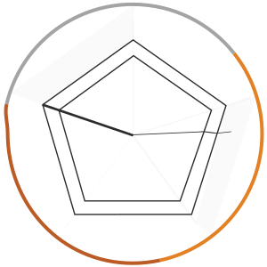

D E S C R I P T I O N
Exploring a design space must generally be done by manual inspection of many design examples. Visualizing design data in an aggregate way can make this process more efficient, but as design data lies in a high-dimensional feature space, selecting the important elements to view is challenging.
Charlotte, is a system that enables exploration of Web designs represented in 1,713 dimensions by applying the concept of data portraits and generating visualizations that capture groups of pages with respect to a selected set of design principles. Charlotte demonstrates that meaningful patterns and trends among the design data can explored by using these principles to inform data-driven portraits.
To visualize the distinguishing features of each cluster, we created data portraits for them using a spider “web” abstraction. Based on the notion that a data portrait can efficiently encode large amounts of disparate data, we used Adobe Illustrator to hand-craft web representations of the clusters using seven principle encodings: balance, color harmony, contrast, emphasis, movement, pattern, and rhythm. A subset of these encodings were further used to develop visualizations for the clusters’ data profiles. The web concept is fitting because it invokes the complexity and richness reflected in our data.
To encode these principles into the webs, we computed aggregate statistics for the target cluster using features such as spatial distribution of page elements, dominant color, largest leaf element or average number of siblings in the DOM tree, etc. We then translated these statistics to correspond to visual features on the webs.
Balance was represented by the proximity of radial rings on the web. More rings closer to the center indicates a page that is skewed to the right. Color is encoded simply by applying the three dominant colors to a ring on the web. Contrast is separately encoded using opacity of a checkerboard pattern in one ring of the web. For example, higher contrast will produce a black and white pattern, while lower contrast tends toward grays. Emphasis is represented by a bolder ring, whose radius represents the amount of emphasis on a page. Movement is encoded using a zig-zagging path across the web. Pattern is represented by the number of elements on a page; more complex pages will have more cells in the web. Rhythm represented using a series of extended web strings. Besides drawing attention, these webs enable high-level comparisons of clusters from a “zoomed-out” view.
D E T A I L S
CS448b : Data Visualization
Instr. : Jeff Heer
Team : Victoria Flores, Maxine Lim, Cesar Torres
Concept Dev. -> Research -> Data Analysis -> Project Proposal -> Design Research -> Implementation -> Web Visualization -> Presentation -> Paper
Contribution : Participated in all phases of development, created all presentation assets, and designed/visualized all svg webs for system.
Utilized : Ruby on Rails, d3.js, JSON, MySQL, and Webzeitgeist Database.
↓
← web clusters 1 - 15 →

- 